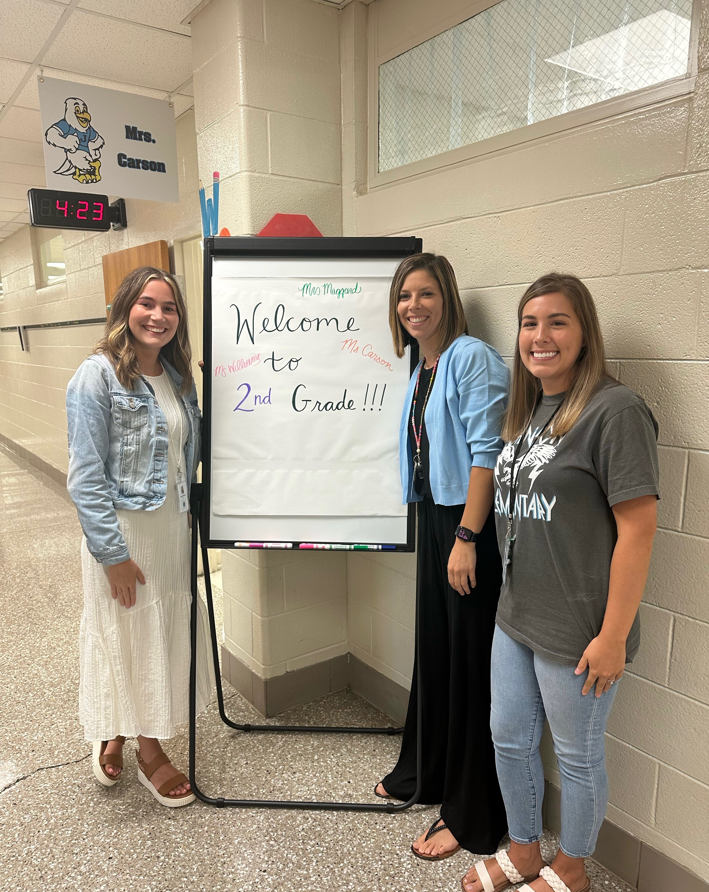

I started my teaching experience in January 2022 at Goose Rock Elementary in Manchester, Ky. There, I taught 4th, 5th, and 6th grade math. I stayed at Goose Rock until May 2023. I had a 6th grade homeroom, so I was involved in the graduation committee (middle school starts at 7th grade in Manchester). I loved this job, but since I was getting married and moving to a different county, I had to find a more local school. Pictured below is a photo of me and my 6th grade homeroom.

I got a 2nd grade position at my new school during the 23-24 school year, and I LOVED the group of students I was teaching. They really captured my heart. Good news! I recently was told that I would be moving up to 3rd grade with the same group of students. I will be teaching 3rd grade writing and I am so excited. Pictured below is a photo of our 2nd grade team. I found some of my best friends here.

"Libraries store the energy that fuels the imagination. They open up windows to the world and inspire us to explore and achieve, and contribute to improving our quality of life." --Sidney Sheldon